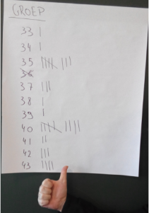

Locatie: Hogeschool PXL
Datum: 15/02/2016 - 19/02/2016
Omschrijving:
Tijdens de projectweek voor de richting Toegepaste Informatica waren er talrijke seminaries en infosessies. Het doel was om de studenten van het 2de jaar informatie en vaardigheden bij te brengen over het gebeuren in de IT wereld. De nadruk werd vooral gelegd op samenwerking als groep. Onze groep is zodanig gevormd dat onze persoonlijke competenties de zwakkere punten van de andere groepsleden complementeren om zo een evenwichtig team te vormen. Onze doelstelling als team was dus duidelijk, onze beste eigenschappen zouden gecombineerd worden om de uitdagingen die we aangaan tot een goed einde te brengen!
De groep bestond uit Samy Coenen, Thomas Ven en Yannick Van Herck.
Maandag
Thema 1: Softskills: groepsdynamica/teamworking
Voormiddag:
Maandag is begonnen met een korte presentatie over de dagindelingen van de volgende dagen. Hierna hebben we uitleg gekregen over de samenwerking binnen het project en hoe verschillende personen elkaar best kunnen aanvullen door de Thalento persoonlijkheidstest te vergelijken. Deze test gaat kijken naar wat je verschillende kwaliteiten zijn binnen de verschillende categorieën.
De 4 categorieën waren:
- Beslissingspatroon
- Teamoriëntatie
- Werkmethode
- Interactie & Relaties
Door deze test kreeg iedereen een beter inzicht van zijn goede en minder goede eigenschappen. Hierna moesten we met onze testresultaten gaan zoeken naar medestudenten die onze negatieve punten omhoog haalden. Zodat we een evenwichtig team konden maken om aan het project te werken. Nadat we onze groepen hadden gevormd gingen we terug naar de aula voor verdere algemene informatie.
Namiddag:
Na de middagpauze hebben we nog een vervolg op de presentatie van de voormiddag gehad. Hierbij werd nog meer informatie over het verloop van samenwerking in teams gegeven. Na deze algemene uitleg werd er een quiz georganiseerd door Ecolo la Luna als teambuilding om onze nieuwe groepen beter te leren kennen.
De groepen waren deze keer ingedeeld per tafel, wij waren groep 5 en in totaal waren er 18 groepen.
Op het einde waren we geëindigd op de 3de plaats i.e. een bronzen medaille.
Dinsdag
Thema 3: professioneel netwerken
Voormiddag:
Seminarie
Onderwerp: Netwerken werkt Spreker: Ann Beckers (https://be.linkedin.com/in/annbeckers)
Samenvatting: Seminarie in verband met het netwerken tussen personen. Aan bod kwam het belang van het opbouwen van een personen-netwerk om zo relaties te leggen die men kan gebruiken om contacten te leggen in verschillende graden.
Hierbij had men het volgende als voorbeeld gebruikt:
Stel je hebt 250, 1ste rang contacten, elke rechtstreekse contactpersoon heeft dan 125 contactpersonen waardoor je al snel 31 500 personen kan bereiken.
Hoofdpunten waren zowel de opbouw en de te volgen stappen om relaties te leggen. Ook kwam grotendeels aan bod wat de verschillende tactieken om contact te leggen met potentiële klanten zijn (brede term voor persoon die hoger in rang staat dan jezelf). Dus ook hoe je met een werkgever omgaat.
Namiddag:
Thema 2: internationalisering
Seminarie
Onderwerp: Internationalisering Sprekers: Johan Cleuren, Marijke Sporen, meerdere Erasmus studenten
Samenvatting: Presentatie over internationale stages en studeren in het buitenland. De verschillende mogelijkheden zijn aan bod gekomen, zowel als de mogelijkheden voor het al dan niet in aanmerking te komen voor een beurs. De vereisten om aan het programma te mogen deelnemen en informatie over het hele gebeuren. Verder werden ook studenten die aan internationaal studeren en stages hebben deelgenomen uitgenodigd voor een korte presentatie te presenteren. De indruk lijkt dat het studeren op zich een vrij chaotische beleving is, verschillen in cultuur en onderwijsniveau als grote obstakels. Ondanks dit zijn de meningen grotendeels hetzelfde, namelijk dat het een onvergetelijke belevenis is en dat iedereen het opnieuw zou doen.
Woensdag
Voormiddag:
Seminarie. Onderwerp: FCCU (Federal Computer Crime Unit) Sprekers: Bart Ooms
Samenvatting: In dit seminarie ging het over hoe de politie meer en meer op digitale criminaliteit bestrijding wilt inzetten.
Ze zijn namelijk aan grondige hervormingen bezig en hebben hun unit van achtentwintig naar tweeënveertig personen uitgebreid.
Tijdens de presentatie werden er heel veel voorbeelden van situaties gegeven hoe het er aan toe gaat. Hierdoor was er een duidelijk beeld van hoe de spreker zijn job ervoer. Er werd zeer uitgebreid geantwoord op alle vragen. De spreker was zeer enthousiast over zijn job , dit maakte de studenten ook meer geïnteresseerd, waardoor er meer vragen gesteld werden.
Hij was ook heel open over de opleiding en het salaris dat je kan verdienen. Om bij de cybercrime unit aangenomen te worden moet je minstens een Professionele bachelor hebben en een 17 maanden lange in-house opleiding gevolgd hebben. Tijdens de opleiding verdien je 1600-1700 euro netto, na de opleiding verdien je rond de 1900 euro afhankelijk van verschillende factoren zoals bijvoorbeeld uw taalbeheersing, zo krijg je een bonus van 150 euro voor de kennis van Frans en 50 euro bonus voor de kennis van Engels, dit laatste is natuurlijk vanzelfsprekend bij een informaticus. Na 5 jaar werkervaring zou het nettoloon rond de 2500 euro zijn en heb je de mogelijk om tegen hetzelfde loon vrij te bewegen naar een andere positie binnen de politie. Een ander onderwerp was het illegaal downloaden van films en muziek, hier gaf Mr. Ooms als voorbeeld een 17-jarige zoon die illegaal muziek gedownload had in zijn kamer, hierdoor had zijn moeder een boete gehad van meer dan honderdduizend euro en had ze zelfs haar huis moeten verkopen.
Namiddag:
Thema 5: onderzoek
Seminarie.
Onderwerp: Onderzoek Spreker: Philippe Haldermans en Steven Palmaers
Samenvatting: In de namiddag kregen we een voorstelling van onderzoek en hoe het in de praktijk gebeurd. Niet iedereen heeft het juiste beeld van onderzoekers en wat ze nu eigenlijk allemaal doen en wat onderzoeken nu eigenlijk inhoud. Hierna lieten ze ons zien hoe er in de praktijk oplossingen worden aangeboden aan bedrijven voor allerhande problemen. Dit gebeurt door middel van een pitch. Bij een pitch ga je eigenlijk op een korte periode een bedrijf je oplossing proberen aan te prijzen zodat ze met jouw oplossing willen verdergaan en met jou hiervoor willen samenwerken. Na de algemene uitleg kregen we nog twee praktijk voorbeelden te zien. Hierna moesten we ook zelf een idee gaan pitchen in 90 seconden. De hele zaal werd verdeeld onder 4 lokalen waar we dan met onze groepjes zelf aan onze ideeën moesten werken. Vervolgens moesten we in de lokalen onze pitch uitvoeren. Nadat iedereen geweest was gingen we stemmen per lokaal wat de twee beste waren. Bij ons lokaal zijn we met ons idee om VR cardgaming uit te brengen als derde geëindigd.
U kan onze pitch beluisteren via deze link.
Hieronder ziet u de puntentelling. 
Hierna gingen we terug naar de aula om de 8 groepen hun pitch nogmaals voor een juri te presenteren. In de finale van de pitchen waren er resterende groepen met volgende onderwerpen:
| Groep | Omschrijving |
|---|---|
| 1 | Een app om je eigen nieuwsfeed te bekijken, deze wordt voorgelezen met text-to-speech. Dit is te gebruiken in auto’s met Apple, Android of AUX-kabel in oude auto’s. |
| 5 | Een Sensor onder een pleister om vitale functies te sensoren en diabetes,hartfalen, etc. te detecteren. Dit kan ook gebruikt worden om tijdens het sporten activiteiten te registreren. |
| 16 | Een zender bij bejaarden zetten om kinesist bezoeken te registreren en de juiste bezoekuren gemakkelijk registreren. |
| 18 | Een web app om broodjes te bestellen. Er is namelijk bijna altijd een lange rij en indien u bestelt hebt kan u snel en gemakkelijk broodjes afhalen aan een automatische verdeelmachine met een code. |
| 25 | Een VR app gebruiken om bejaarden te laten winkelen in een virtuele winkel, kinderen die in een andere kamer zijn kunnen door een VR bril zichzelf in dezelfde kamer als hun ouders ouders plaatsen. |
| 30 | Een app om studierichtingen weer te geven, daarna door een persoonlijkheidstest een aantal richtingen aanbevelen. Dit zou ontworpen worden met behulp van de afdeling lerarenopleiding en ze denken hiervoor twee pedagogen en twee tot drie ontwikkelaars nodig te hebben. |
| 35 | VR bril gebruiken om les te volgen thuis in de zetel. Lector kan 3D objecten maken om de lessen nog interessanter te maken. Ze gaan de brillen niet zelf maken maar ze gaan bestaande brillen gebruiken van Sony, HTC en Oculus. |
| 40 | Mailbox filter tegen Wies Bijnens met aanpasbare sleutelwoorden of de volledig negeren optie gebruiken. |
De uiteindelijke top 3 was:
Rangschikking:
3de plaats groep 35
2de plaats groep 16
1ste plaats groep 30
Donderdag
Thema 6: klantgerichtecommunicatie
Voormiddag:
Seminarie
Onderwerp: klantgerichte communicatie Spreker: Ann Beckers (https://be.linkedin.com/in/annbeckers)
Samenvatting: In dit seminarie kregen we meer uitleg over hoe we moeten presenteren. Er werden allerhande tips en trucks gegeven over hoe we een presentatie moeten voorbereiden, uitvoeren en reflecteren. Ze wees er bijvoorbeeld op om op presentatie slides enkel korte punten te zetten en er voor te zorgen dat de klant de toekomstige onderwerpen nog niet kon aflezen want anders zou hij te snel afgeleid kunnen zijn. Hierna moesten we de geleerde vaardigheden toepassen in een kleine opdracht. Hier werden ons twee problemen voorgesteld die we moesten proberen op te lossen en dan onze oplossing in een presentatie en demo proberen te steken. Het eerste probleem was een lingerie winkel die meer jongeren als klanten wilde aantrekken. En het tweede probleem was een opvangcentrum waar jongeren wonen die ook internet toegang hebben via de vaste computers aanwezig. Ook konden de oudere jongeren met hun eigen toestellen op het internet. Het enige probleem was dat hier geen enkele beveiliging op zit. We hebben voor het tweede probleem gekozen en dit uitgewerkt. Hierna was er per probleem één groep die het effectief moest presenteren dit werd hierna in de grote groep gereflecteerd en kregen we nog meer uitleg wat er goed en minder goed was.
Onze oplossing voor de eerste situatie:
Huidige situatie:
- 1 bbox
- 1 switch
- 3 computers + 1 defecte
- 6 laptops
- 1 fileserver met windows 7
Oplossing 1:
bbox(WIFI OFF) -> Windows 7(Bind DNS Manager,ICS) -> Switch -> Vaste Computers Access
Point(Met goede beveiliging)
Instelling op bbox: iedereen heeft geen internet op bepaalde uren.
Installeer bind op Windows 7 pc
Instelling op Access Point:
Wifi: WPA2(AES,…) wachtwoord
WPS disabled
Te kopen:
- 1 Access Point +/- 50€
- 1 Netwerk kaart 2 gigabit poorten +/- 50€
Oplossing 2:
Verkrijg server met windows server 2008 / 2012
Reden: veel meer opties zoals internet blokkeren per groep.
Gebruikers blokkeren kan op server i.p.v. bbox.
Oplossing 3:
Installeer Ubuntu Server op huidige server.
Te kopen:
- Harde schijf +/- 20€
- 1 Netwerk kaart 2 gigabit poorten +/- 50€
Nadeel = zeer moeilijk aanpasbaar voor normaal persoon.
Namiddag:
Onderwerp: Portfolio + Jobevent Samenvatting: Na de middagpauze gingen we naar de lokalen om aan ons portfolio te werken. Dit ging voor ons zeer vlot omdat we door de week al goed aan ons portfolio hadden gewerkt. Rond 14:50 zijn we dan naar het jobevent in gebouw D gegaan. Tijdens dit jobevent konden we met de verschillende bedrijven gaan praten die er een stand hadden. En zo onze geleerde vaardigheden van het seminarie Netwerken Werkt proberen toe te passen. Dit jobevent was bedoeld om ons een kans te geven een stageplaats en/of een vakantiejob te helpen verkrijgen en om ons te laten netwerken met de verschillende bedrijven die aanwezig waren.
Vrijdag
Voormiddag:
Onderwerp: Voorstelling projecten
Spreker: David Parren en Gert Van Waeyenberg
Samenvatting: Tijdens deze voorstelling maakten we kennis met onze lectoren voor de netwerkvakken. Voor Windows zal het David Parren worden en voor Linux zal het Gert Van Waeyenberg worden. We kregen hierna ook al een kleine opdracht waarin we met een klein budget een upgrade moesten doen van twee servers. Dit bleek echter niet zo simpel. Uiteindelijk kregen we een mogelijke oplossing te horen. Dit gingen we dan in MS Project plannen en uitwerken.
Tussendoor kregen we ook meer informatie over de servers die op de hogeschool aanwezig zijn en die we in het verloop van het semester gaan gebruiken. We hebben ook een twee SAS harde schijven en ECC-geheugen latjes mogen bekijken in het lokaal.
Namiddag:
Thema 7: Ondernemerschap
Seminarie
Onderwerp: ondernemingschap
Meerdere sprekers:
- Wouter Vandenneucker (@woutervddn)
- Bjorn Engels (@BjornEngels)
- Alain Hufkens (@hufkens)
- Jeroen Benats(@JeroenBenats).
Deze ondernemers spraken over Credo3D, WeeTaps, Bambooti en Bewire.
Samenvatting: In de namiddag zijn we naar de Corda Campus gegaan waar een aantal jonge ondernemers spraken over wat hun ervaringen zijn als ondernemer in de ondernemingswereld. Hierbij kwamen meerdere sprekers aan het bod die hun onderneming kwamen voorstellen en vooral hoe het leven als ondernemer is. De meeste zeiden dat als je een idee hebt, het niets waard is. Je moet het echt uitwerken, je moet actie ondernemen. Er werd zelfs gezegd dat ideeën waardeloos zijn in vergelijking met de grote berg werk dat uitgevoerd moet worden voor het idee te realiseren. Een eigen onderneming starten is een kwestie van durven. Natuurlijk heb je ook de mogelijkheden en de kansen nodig om dit financieel mogelijk te maken. Hiervoor zijn er de medewerkers van PXL-UHasselt StudentStartUP, zij bieden hun diensten gratis aan studenten en sturen je door naar kanalen waar je wel investeringen kan bemachtigen. Ook zijn er heel wat interessante mogelijkheden om als student toch al een onderneming te kunnen starten en tegelijk nog studeren. Dit was toch wel iets wat ons verbaasde. Er kunnen zelfs examens verplaatst worden als je bijvoorbeeld naar een evenement moet gaan voor je onderneming. Ook waren er sprekers die vaak niet in hun opzet slaagden maar toch ondanks de tegenslagen bleven doorzetten en er gekomen zijn. Waar het op neerkwam uiteindelijk was dat iedereen met een idee een onderneming kan starten, maar je moet bereid zijn er voor te werken.
Eindreflectie:
Als ik één conclusie kan trekken uit deze week, dan is het wel dat soft skills enorm belangrijk zijn. We leven in een globale wereld met een steeds grotere vraag naar IT en daardoor hebben we veel kansen maar we moeten ze natuurlijk wel zelf grijpen. Als hogeschoolstudenten zijn dit bij ons bijvoorbeeld de seminaries, de internationale reizen, enzovoort… . Al de contacten die we op deze manier maken kunnen we op LinkedIn als connecties toevoegen om een sterk startpunt te hebben na de studies.
We hebben geleerd dat een sterk team niet enkel op één vlak goed moet zijn, maar het is belangrijk een zo gevarieerd team mogelijk te vormen omdat teamprojecten een dynamisch gebeuren zijn met veel planning en communicatie voordat het echte werk kan uitgevoerd worden. Ons team is hierin geslaagd door te communiceren via een Facebook groepsgesprek en een gedeeld Google Docs document om verbeteringen op uit te voeren die uiteindelijk op dit Portfolio zijn terechtgekomen.
Mijn sterke punten waren zeker dat ik veel initiatief nam in de groep. In groep is er doelgericht gewerkt met een constant goede communicatie. Wanneer we andere meningen hadden, werd dit bediscussieerd tot een oplossing wordt gevonden die unaniem aanvaard werd. Het is belangrijk om rustig te blijven en te blijven luisteren, als er twee personen zich opjagen is er snel een conflict.
Ook andere communicatie naar buiten toe, zoals het presenteren en communiceren met een klant zonder technische kennis is niet eenvoudig maar zeker oplosbaar door het meer te oefenen. Omdat we als studenten altijd omringt zijn door andere studenten met dezelfde technische kennis vergeten we soms empathisch te zijn met “leken” .